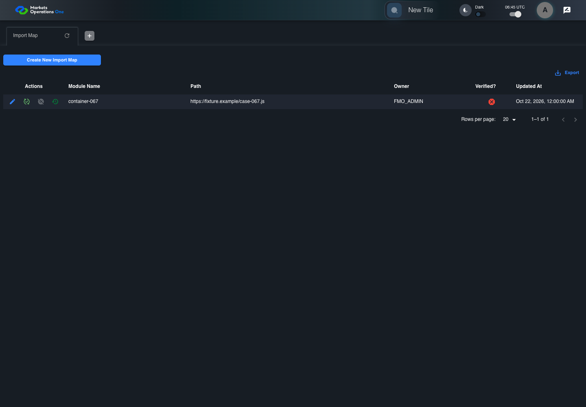
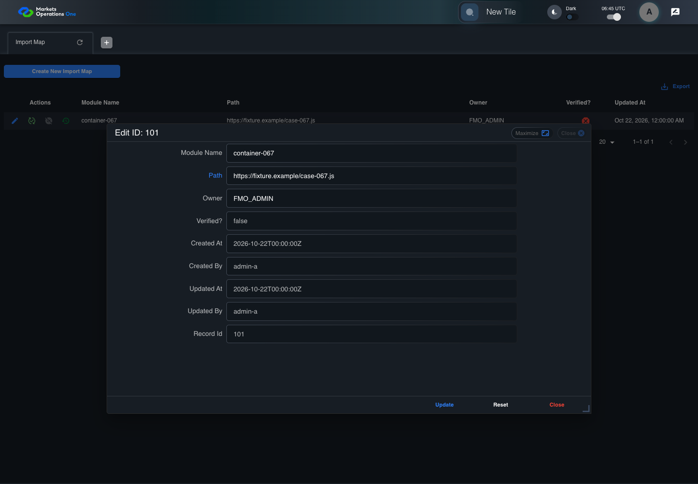
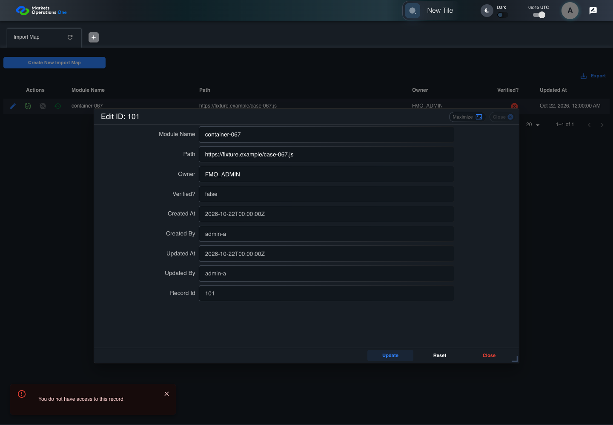

BFF-ADM-067 current BFF administration through actual UI
PASS · application/run-072/bff-adm-067-current-bff-administration-through-actual-ui-6e659a6486f3-attempt-1 · ACTUAL_APPLICATION_LOCAL_SERVICES
Actual current React and exact-current BFF admin controllers/services/JPA with actual migration DDL in disposable PostgreSQL. Controlled OUD/EMS2 identities and local Spring bootstrap. Fixture SQL seeds/mutates isolated records; service errors are actual database errors. Undefined agreed messages remain unresolved acceptance.
2026-10-22T06:45:56.891Z to 2026-10-22T06:46:01.613Z
Assertions and result · Artifact manifest · Exact run inputs and source hashes
Result SHA-256:f8d9e2b59b13315f6c9dd4c5c54d8943a4084c49c716f4c9115eb72ff9dfef33Machine observations
- actual-identity-projection.json
78c2c85c2e7a259941859c5aa6bac5b24d097c59f3411e096241e1e272ee7a3b - baseline-inputs.json
570ef8bc91743e8d099ce2938250dc64ffeb2454c64ab6ff3a6c59c273720a6b - bff-boundary.json
943f1786f4cc4698c0ac2289599eda1f0d364b157a677e9d0f14d7135bef58cf - committed-ui-submission-comparisons.json
40e0b8bb11eb83fa181e8e1225c58a2aff41a31f87f5ea01809b01bff4d0e121 - fixture-step-4.json
e0ebca88ea1e09149dd4457be41ba7da24837e4be2b11a8e6b5dbf4907c6c66d - fixture-step-5.json
05e8a046f79cb25039f9f39971d3c357759ddc9c3c82022bb64ed8de6426dde4 - initial-persisted-records.json
8d1ceae8f1fd8b437b96f9656cc6047fabbe322c3e5b4ed8696b73db9db27c1c - persisted-after-submit.json
cbe728a6ab1ea3e2b3b54a8ef525b7acf4fea9affef6874ae10838be0e62b2bf - super-user-stale-read-importmap.json
a38d7cb45f712986b74dbdf7069620277e9a36e5418b82ed6c3d17526861f746 - ui-origin-bff-requests.json
27d4c51a86b4b3de4ecb573117b216e78e0162d18c7022cfcee712c2b46e4f29
Screenshot capture: CAPTURED. Named frames: 13.
Step screenshot bindings: COMPLETE. 12/12 canonical steps have execution screenshots.
Bindings measure structural coverage only. They do not establish screenshot content quality or relevance.
Screenshot content review: NOT_REVIEWED. Recorded context: 0/13 frames. Identical image bytes: 6 repeated frames. Recorded context does not establish human visual review.
Canonical step timeline
Given Admin S uses subject "admin-s" with role "SUPER_USER only" in an isolated authenticated browser
Execution: PASSED.
1. step-01 Visible state after step 1: Given Admin S uses subject "admin-s" with role "SUPER_USER only" in an isolated authenticated browser
2026-10-22T06:45:59.385Z · 1440×1000
Step: /Users/lushevol/code/github/ratan-release-impact/workbench/tasks/ui-test-coverage-20261022/test-cases.md:17521
SHA-256:ec6bfd763aaaf5528919316a23b74c85b64c83274883a9c4c470fbf1bee503dfAnd the controlled Import Map fixture records the initial grid rows and persisted values
Execution: PASSED.
2. step-02 Visible state after step 2: And the controlled Import Map fixture records the initial grid rows and persisted values
2026-10-22T06:45:59.516Z · 1440×1000
Step: /Users/lushevol/code/github/ratan-release-impact/workbench/tasks/ui-test-coverage-20261022/test-cases.md:17522
SHA-256:ec6bfd763aaaf5528919316a23b74c85b64c83274883a9c4c470fbf1bee503dfImage bytes match frame 1. An unchanged image can be valid for consecutive assertions. This match does not establish correct step content.
And the Import Map grid has record "101" owned by "FMO_ADMIN"
Execution: PASSED.
3. step-03 Visible state after step 3: And the Import Map grid has record "101" owned by "FMO_ADMIN"
2026-10-22T06:45:59.566Z · 1440×1000
Step: /Users/lushevol/code/github/ratan-release-impact/workbench/tasks/ui-test-coverage-20261022/test-cases.md:17523
SHA-256:ec6bfd763aaaf5528919316a23b74c85b64c83274883a9c4c470fbf1bee503dfImage bytes match frame 2. An unchanged image can be valid for consecutive assertions. This match does not establish correct step content.
And the baseline fixture data defines "Module Name" as "container-067"
Execution: PASSED.
4. step-04 Visible state after step 4: And the baseline fixture data defines "Module Name" as "container-067"
2026-10-22T06:45:59.615Z · 1440×1000
Step: /Users/lushevol/code/github/ratan-release-impact/workbench/tasks/ui-test-coverage-20261022/test-cases.md:17524
SHA-256:ec6bfd763aaaf5528919316a23b74c85b64c83274883a9c4c470fbf1bee503dfImage bytes match frame 3. An unchanged image can be valid for consecutive assertions. This match does not establish correct step content.
And the baseline fixture data defines "Path" as "https://fixture.example/case-067.js"
Execution: PASSED.
5. step-05 Visible state after step 5: And the baseline fixture data defines "Path" as "https://fixture.example/case-067.js"
2026-10-22T06:45:59.666Z · 1440×1000
Step: /Users/lushevol/code/github/ratan-release-impact/workbench/tasks/ui-test-coverage-20261022/test-cases.md:17525
SHA-256:ec6bfd763aaaf5528919316a23b74c85b64c83274883a9c4c470fbf1bee503dfImage bytes match frame 4. An unchanged image can be valid for consecutive assertions. This match does not establish correct step content.
When Admin S clicks the button labeled "Edit" in the Import Map grid row with "Record Id" "101"
Execution: PASSED.6. step-06 Visible state after step 6: When Admin S clicks the button labeled "Edit" in the Import Map grid row with "Record Id" "101"
2026-10-22T06:45:59.916Z · 1440×1000
Step: /Users/lushevol/code/github/ratan-release-impact/workbench/tasks/ui-test-coverage-20261022/test-cases.md:17526
SHA-256:23c2bd1d264d965e0cfa638815018127e3fc07511a0c4f86f4b98d90947f4905Then the dialog titled "edit ID: 101" is visible on the Import Map administration page
Execution: PASSED.7. step-07 Visible state after step 7: Then the dialog titled "edit ID: 101" is visible on the Import Map administration page
2026-10-22T06:45:59.986Z · 1440×1000
Step: /Users/lushevol/code/github/ratan-release-impact/workbench/tasks/ui-test-coverage-20261022/test-cases.md:17527
SHA-256:9f874ae1325e24f53606cd28e907ff5c49b13eb219717a02dc26ae92d78a7889When Admin S fills the textbox labeled "Module Name" with "container-067" in dialog "edit ID: 101"
Execution: PASSED.8. step-08 Visible state after step 8: When Admin S fills the textbox labeled "Module Name" with "container-067" in dialog "edit ID: 101"
2026-10-22T06:46:00.420Z · 1440×1000
Step: /Users/lushevol/code/github/ratan-release-impact/workbench/tasks/ui-test-coverage-20261022/test-cases.md:17528
SHA-256:3c488af6fcf64487e7862e8c8c16475ee68fb2936eacdfd22cf07cc8fd89c272And Admin S fills the textbox labeled "Path" with "https://fixture.example/case-067.js" in dialog "edit ID: 101"
Execution: PASSED.
9. step-09 Visible state after step 9: And Admin S fills the textbox labeled "Path" with "https://fixture.example/case-067.js" in dialog "edit ID: 101"
2026-10-22T06:46:00.856Z · 1440×1000
Step: /Users/lushevol/code/github/ratan-release-impact/workbench/tasks/ui-test-coverage-20261022/test-cases.md:17529
SHA-256:0bb5d05e20c44b82853d01740f11887e5d02ea71a84a36178b037f9fd987ee9eAnd Admin S clicks the button labeled "Update" in dialog "edit ID: 101"
Execution: PASSED.
10. step-10 Visible state after step 10: And Admin S clicks the button labeled "Update" in dialog "edit ID: 101"
2026-10-22T06:46:01.099Z · 1440×1000
Step: /Users/lushevol/code/github/ratan-release-impact/workbench/tasks/ui-test-coverage-20261022/test-cases.md:17530
SHA-256:54dbb068844be98291b056ed043293ff12dc692c89a80a96ddf512ef479b244eThen the alert with severity "error" in the portal snackbar contains the exact text "You do not have access to this record."
Execution: PASSED.11. step-11 Visible state after step 11: Then the alert with severity "error" in the portal snackbar contains the exact text "You do not have access to this record."
2026-10-22T06:46:01.148Z · 1440×1000
Step: /Users/lushevol/code/github/ratan-release-impact/workbench/tasks/ui-test-coverage-20261022/test-cases.md:17531
SHA-256:1193ad7dc38ef7cfaeed9d178363d65770e54fd81f6625e5a1fbaa28a4f9ebc5And the Import Map data grid with column "Record Id" row identifiers and loaded field values equal the initial grid snapshot on the Import Map administration page
Execution: PASSED.
12. step-12 Visible state after step 12: And the Import Map data grid with column "Record Id" row identifiers and loaded field values equal the initial grid snapshot on the Import Map administration page
2026-10-22T06:46:01.264Z · 1440×1000
Step: /Users/lushevol/code/github/ratan-release-impact/workbench/tasks/ui-test-coverage-20261022/test-cases.md:17532
SHA-256:1193ad7dc38ef7cfaeed9d178363d65770e54fd81f6625e5a1fbaa28a4f9ebc5Image bytes match frame 11. An unchanged image can be valid for consecutive assertions. This match does not establish correct step content.
Additional named frames

The final visible state after the named test assertions.
2026-10-22T06:46:01.331Z · 1440×1000Step: Test source: /Users/lushevol/code/github/ratan-release-impact/workbench/e2e/audit-specs/bff-admin.spec.ts:11
SHA-256:
1193ad7dc38ef7cfaeed9d178363d65770e54fd81f6625e5a1fbaa28a4f9ebc5Image bytes match frame 12. An unchanged image can be valid for consecutive assertions. This match does not establish correct step content.
Screenshots establish visible state only. Assertions and traces support functional claims.